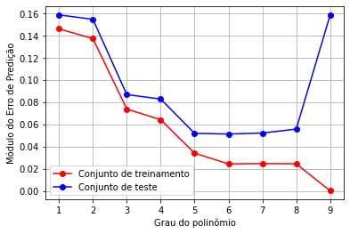

Regressão Linear
Conteúdo
Regressão Linear¶
import numpy as np
import matplotlib.pyplot as plt
Fit para diferentes valores de M¶
N = 10
Nt = 1400
xt = np.linspace(0.1, 1.5, Nt)
y_exato = 0.5 + 0.25 * np.cos(2 * np.pi * xt)
x = np.linspace(0.1, 1.5, N)
y = 0.5 + 0.25 * np.cos(2 * np.pi * x) + 0.06 * np.random.randn(N)
y_teste = 0.5 + 0.25 * np.cos(2 * np.pi * xt) + 0.06 * np.random.randn(Nt)
def RL_MQ(x, y, m):
N = len(y)
M = np.zeros((N, m + 1))
iv = np.arange(0, m + 1)
for i in range(N):
M[i, :] = x[i] ** iv
R = M.T @ M
p = M.T @ y
v = np.linalg.solve(R, p)
e = y - M @ v
return v, e
def TESTE_POL(v, xn):
m = len(v)
N = len(xn)
yn = np.zeros(N)
for i in range(m):
yn = yn + v[i] * xn ** i
return yn
ordem = range(1, N)
erro_treino = np.zeros(N - 1)
erro_teste = np.zeros(N - 1)
fig = plt.figure(figsize=(12, 12))
for m in ordem:
v, e = RL_MQ(x, y, m)
yt = TESTE_POL(v, xt)
erro_treino[m - 1] = np.sum(np.abs(e)) / N
erro_teste[m - 1] = np.sum(np.abs(yt - y_teste)) / Nt
plt.subplot(3, 3, m)
plt.plot(xt, y_exato, "k")
plt.plot(xt, yt, "b")
plt.plot(x, y, "or")
plt.grid()
plt.title("M= " + str(m))

Módulo do erro de predição¶
fig = plt.figure()
plt.plot(ordem, erro_treino, "-or", label="Conjunto de treinamento")
plt.plot(ordem, erro_teste, "-ob", label="Conjunto de teste")
plt.xlabel("Grau do polinômio")
plt.ylabel("Módulo do Erro de Predição")
plt.grid()
plt.legend()
<matplotlib.legend.Legend at 0x7fd8362db700>
